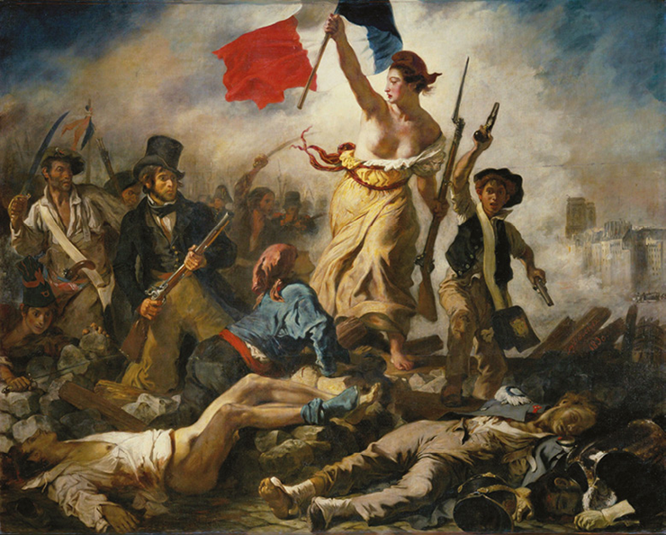
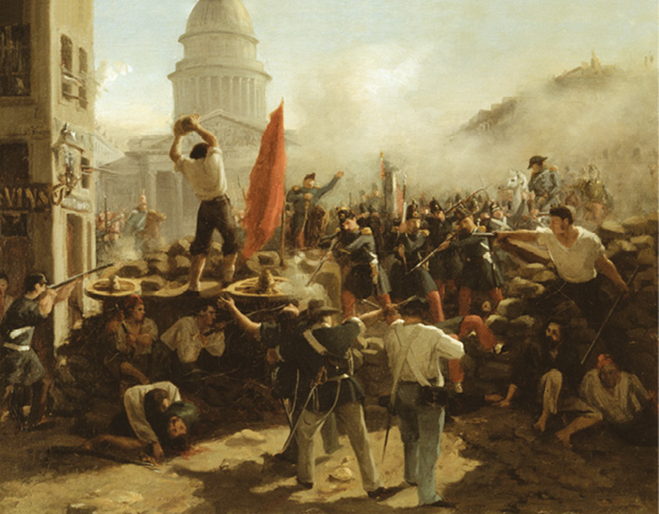
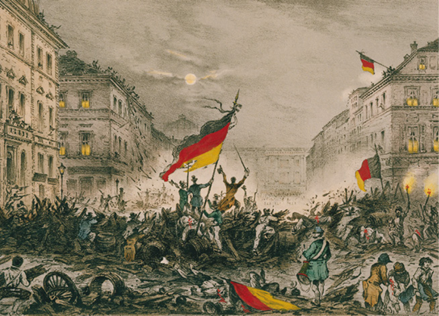
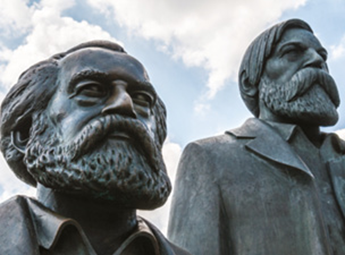

O lema “ Liberté, Egalité, Fraternité ” (liberdade, igualdade, fraternidade) foi criado na Revolução Francesa, e permanece até hoje como um símbolo da democracia liberal ou constitucional e da derrubada de governos opressores. Na imagem, o lema aparece na fachada da Câmara Municipal de Paris.
VitalyEdush/iStockphoto.com
A maneira como pensamos a política mundial atualmente foi moldada durante o século XIX, quando se formaram as nações contemporâneas e surgiram os principais grupos políticos.
Com a queda de Napoleão Bonaparte, os países europeus buscaram reorganizar o cenário político do continente. Nesse período, ideias como liberalismo, nacionalismo, restauração e socialismo estavam se consolidando e dividindo opiniões. Isso teria um reflexo muito forte, gerando revoluções pela Europa.
[...] na Europa absolutista, a rigidez dos regimes políticos de 1815, que foram projetados para rechaçar toda mudança de teor nacional ou liberal, não deixou qualquer escolha até mesmo para o mais moderado dos oposicionistas, a não ser a do status quo ou da revolução. Pode ser que não estivessem prontos a se revoltar, mas, a menos que houvesse uma revolução social irreversível, nada ganhariam. Os regimes de 1815 tinham que ser banidos, mais cedo ou mais tarde. Eles próprios o sabiam. A consciência de que a “história estava contra eles” minava sua vontade de resistir.
HOBSBAWM, Eric J. A era das revoluções : 1789-1848. Rio de Janeiro: Paz e Terra, 1977. p. 421.
- De que forma os efeitos das revoluções Industrial e Francesa e da Era Napoleônica impactaram acontecimentos no século XIX?
- O que você entende por socialismo, liberalismo e nacionalismo? Qual foi o contexto histórico em que esses conceitos surgiram e se desenvolveram na Europa?
Neste capítulo serão abordadas as habilidades EM13CHS102 , EM13CHS103 , EM13CHS603 .
Congresso de Viena (1814-1815)
Após a derrota de Napoleão na Rússia, em 1814, as principais potências europeias – Inglaterra, Prússia, Áustria e Rússia – se reuniram para reorganizar o mapa político da Europa, que havia se transformado com o expansionismo napoleônico. O objetivo era evitar uma maior propagação de ideias revolucionárias, advindas do pensamento iluminista, e restaurar as condições políticas no continente, restabelecendo as monarquias e os territórios do período anterior a 1789. Assim, na França, foi coroado Luís XVIII (1814-1824), irmão do rei guilhotinado durante a Revolução Francesa.
O Congresso de Viena foi interrompido durante o governo dos Cem dias de Napoleão (de março a julho de 1815); no entanto, após nova derrota do imperador na famosa Batalha de Waterloo, na Bélgica, retomou as atividades com o objetivo de manter uma política europeia conservadora, antiliberal e antirrevolucionária. Para isso, foram estabelecidos três princípios básicos:
Fonte: Elaborado com base em Hermann Kinder e Werner Hilgemann. Atlas histórico mundial – De la Revolución Francesa a nuestros días. Madri: Ediciones Istmo, 1982. p. 40; Manoel Maurício de Albuquerque, Arthur Cézar Ferreira Reis e Carlos Delgado de Carvalho. Atlas histórico escolar . 8. ed. Rio de Janeiro: Fename/MEC, 1980. p. 130.
A partir das determinações do Congresso, os ingleses garantiram o controle de locais estratégicos para chegar à Índia e ao Mar Mediterrâneo; a Rússia estendeu seus domínios em direção a Polônia, Finlândia e Bessarábia; a Holanda incorporou a Bélgica; os austríacos anexaram territórios nos Bálcãs e no norte da Península Itálica; a Suíça tornou-se um Estado neutro; e foram restabelecidos os Estados Pontifícios. A Prússia anexou partes da Saxônia, Polônia, Westfália e províncias do Reno. Os territórios de língua alemã formaram a chamada Confederação Germânica , uma associação política e econômica composta de 39 Estados autônomos sob a hegemonia política do Império Austríaco e da Prússia.
Para conter movimentos revolucionários de caráter liberal foi organizada a Santa Aliança , uma força militar operacional das monarquias europeias para dissipar tentativas de derrubada das monarquias restauradas.
Pensamento econômico.
Direção: Neste site , há uma série de informações relevantes sobre a vida e a obra dos principais autores do pensamento econômico liberal.
Disponível em: <http: //p.p4ed.com/QWPWZ>. Acesso em: 18 ago. 2021.
Revoluções na Europa: 1830 e 1848
Na Europa, no início do século XIX, as ideias liberais, promovidas pelo Iluminismo e difundidas por Napoleão, agradavam cada vez mais à burguesia. Esses ideais pregavam o fim da interferência do Estado na vida particular e pública e combatiam o mercantilismo, modelo econômico empregado pelo absolutismo. Além disso, os economistas liberais clássicos defendiam a ideia de liberdade para o mercado, mas acreditavam que o Estado poderia intervir na economia em momentos de crise, como em períodos de guerra, por exemplo.
As ideias liberais, então, avançaram por boa parte do continente europeu, e muitos monarcas tiveram seus poderes limitados. A burguesia se organizou em partidos políticos e passou a exigir a criação de órgãos de representação parlamentar, a fim de ter seus interesses representados, evitando que as decisões políticas se concentrassem nas mãos do rei ou da aristocracia. Com isso, a burguesia, que já tinha poder econômico, passou a exercer maior pressão sobre os governos e conseguiu se aproximar mais do poder político.
Assim, inspirada nos princípios da Revolução Francesa – portanto, opondo-se à restauração da monarquia absolutista imposta pelo Congresso de Viena –, entre os anos de 1830 e 1848, uma onda revolucionária marcou a Europa. Os principais eventos ocorreram na França: o primeiro, em 1830, de caráter liberal; o segundo, em 1848, quando eclodiu uma série de conflitos que tinham um componente social (com a participação de socialistas, anarquistas, operários) e nacionalista maior do que os anteriores.
As revoluções dos anos 1830
As revoluções ocorridas por volta de 1830 afetaram quase toda a Europa. A Bélgica tornou-se independente da Holanda, estabelecendo uma monarquia liberal reconhecida pela França e pela Grã-Bretanha. Já na Europa Central e Oriental, esse processo revolucionário não foi tão bem-sucedido: as revoluções que eclodiram em vários Estados italianos foram duramente reprimidas pelos austríacos; em alguns Estados alemães, constituições foram aprovadas, mas logo revogadas; na Polônia, a independência foi proclamada, porém em seguida a rebelião foi esmagada pelos russos. Contudo, na França, as revoltas se aprofundaram. Os Bourbons foram derrubados na revolução de julho de 1830.
Após a derrota de Napoleão, o rei Luís XVIII foi reconduzido ao trono francês em 1815, mas não aceitou se submeter a uma Constituição que limitasse seus poderes – ele manteve-se no poder até 1824. Seu sucessor, Carlos X, também se recusou a subordinar-se aos parlamentares nas decisões políticas e econômicas. Diante dessa situação, eclodiu, na França, uma série de manifestações e revoltas que levou, em 1830, à abdicação de Carlos X, por pressão popular e, principalmente, da burguesia. Em seu lugar, a burguesia apoiou a coroação do rei Luís Filipe de Orleans, que ficou conhecido como “o Rei Burguês”.
No entanto, a situação da população mais pobre da França tornava-se cada vez mais crítica. As péssimas condições de vida, o descaso político e as más colheitas desde 1825 ocasionaram um êxodo rural; mas os trabalhadores urbanos também viviam em condições bastante precárias, com alto índice de desemprego e salários baixíssimos, insuficientes para uma sobrevivência digna. Esses setores descontentes passaram a se unir, tornando-se uma ameaça aos capitalistas.
As revoluções da década de 1830 refletiram o forte descontentamento das classes populares. Além disso, um movimento democrático e republicano mais radical emergiu, demonstrando a divisão que estava surgindo no liberalismo. Esse movimento logo enfrentaria, por exemplo, a nova monarquia constitucional francesa, baseada nos princípios do liberalismo moderado: o sufrágio censitário e o controle do sistema pela alta burguesia.
Eugène Delacroix. A Liberdade guiando o povo , 1830. Óleo sobre tela. Museu do Louvre, Paris. Nesta obra, é apresentada uma alegoria da Liberdade, simbolizada pela mulher (que esteticamente lembra também deusas gregas da Antiguidade) segurando a bandeira tricolor – símbolo da Revolução Francesa – e uma baioneta, guiando a população ao seu redor para a revolução. Nota-se a representação de diversos setores sociais, como camponeses, operários e estudantes, além da burguesia, retratada pelo homem de cartola e casaca empunhando uma arma de caça (esta pode ser também uma autorrepresentação do pintor).
Erich Lessing Culture and Fine Arts Archives/Museu do Louvre, Paris, França
Primavera dos Povos (1848)
O ano de 1848 ficou marcado pela chamada Primavera dos Povos , uma série de revoluções que se espalharam pela Europa. As revoltas populares tiveram início em Paris e se alastraram para Berlim, Viena, Roma e Budapeste. O povo saiu às ruas, fazendo bloqueios e enfrentando os seus governos.
Na França
As causas da revolução iniciada na França encontram-se na situação precária da população e no agravamento do quadro de crise econômica em 1847, como resultado de uma sequência de más colheitas. A crise agrária influenciou os setores industrial e financeiro, levando muitos trabalhadores ao desemprego. Havia também a negação de direitos e liberdades em importantes setores da sociedade francesa: o governo do rei Luís Filipe só atendia aos interesses da alta burguesia, negligenciando a pequena burguesia, o proletariado e demais setores da sociedade.
Diante disso, operários, estudantes, artesãos e pequenos comerciantes uniram-se e ocuparam a cidade de Paris, o que forçou o rei a abdicar do trono. Assim, a Segunda República francesa foi proclamada.
Um governo republicano provisório foi instalado com o objetivo de conter as agitações populares e organizar uma eleição – pela primeira vez com integrantes que defendiam ideias socialistas. Esse governo defendia o sufrágio universal masculino e, a fim de gerar empregos, a criação de oficinas de artesanato que seriam financiadas pelo Estado com o dinheiro de impostos pagos pela burguesia. As oficinas nacionais garantiriam trabalho em aterros, fábricas e construções do governo. Além disso, foi implementada uma jornada de trabalho máxima de dez horas.
Descontentes, os burgueses reagiram e procuraram um meio de manipular a situação novamente a seu favor. Havia, por parte de grupos liberais moderados, uma forte oposição a essas medidas. Nas eleições para a Assembleia Constituinte, os moderados saíram vitoriosos.
A revolução se radicalizou, e a pequena burguesia, anteriormente aliada às classes trabalhadoras, aliou-se à alta burguesia. A luta contra o absolutismo foi transformada em uma luta entre burgueses e trabalhadores, resultando em uma forte repressão. Os populares intensificaram suas manifestações, e o que era uma revolução tornou-se uma guerra civil. A Assembleia definiu que o Poder Executivo, a partir de então, caberia a um presidente, eleito para governar por quatro anos.
Esse clima de revolta e tensão favoreceu a vitória, nas eleições presidenciais de 1848, de Luís Bonaparte, sobrinho de Napoleão. Na sequência da adoção da Constituição, Luís Bonaparte foi nomeado presidente, conquistando a simpatia e os votos dos franceses, em grande parte pelo seu sobrenome, associado à ordem, à paz e a uma época de conquistas militares.
Horace Vernet. Barricada na rua Soufflot, Paris, 25 de junho de 1848 , século XIX. Óleo sobre tela. Museu Histórico Alemão, Berlim. Representação dos conflitos em Paris em decorrência da chamada Primavera dos Povos.
Album/Fotoarena/Museu Histórico Alemão, Berlim
Napoleão III
Em 1851, já próximo ao fim de seu mandato de quatro anos, apoiado pela alta burguesia e pelos militares, Luís Bonaparte fechou a Assembleia Nacional e, por meio de um golpe de Estado, estabeleceu uma ditadura, coroando-se Imperador da França, com o título de Napoleão III, inaugurando assim o Segundo Império francês . Karl Marx, filósofo e historiador alemão, chamou esse golpe de “18 de Brumário de Luís Bonaparte” – em um trabalho de mesmo nome, publicado em 1852 –, em uma alusão à clara tentativa deste de se equiparar com Napoleão.
As reformas de Haussmann influenciaram projetos urbanos no Brasil: as reformas realizadas pelo prefeito do Rio de Janeiro, Pereira Passos, no início do século XX, foram inspiradas no projeto francês.
Maquete da cidade de Paris. É possível perceber a simetria no projeto da cidade – observe as largas avenidas que partem da praça do Arco do Triunfo.
WNakdee/Shutterstock.com
Durante o reinado de Napoleão III, o prefeito de Paris, o barão Georges-Eugène Haussmann, realizou a famosa reforma urbana da capital francesa, que promoveu a instalação de esgotos, extensão do sistema de distribuição de água e promoção da iluminação pública. As vias de circulação foram organizadas geometricamente, marcadas por largos bulevares. Além disso, foram construídos parques, os bairros foram arborizados, e eliminaram-se os inúmeros cortiços existentes na cidade. Essas medidas higienizaram, embelezaram e modernizaram Paris, porém a população pobre foi removida compulsoriamente das áreas centrais e instalada nas periferias.
Comuna de Paris (18 março – 28 maio de 1871)
Durante o Segundo Império, a Guerra Franco-Prussiana (1870-1871) terminou como um grande desastre para a França, levando à queda de Napoleão III. Essa situação provocou uma série de revoltas populares, aglutinando diferentes projetos e visões de mundo com tendências socialistas. O povo saiu às ruas sob o lema: “a pátria está em perigo”. Com isso, foi instaurada a Terceira República francesa , sob o governo de Adolphe Thiers.
A população francesa, fundamentalmente os operários, ainda estava descontente com os termos da rendição da França na guerra, o aumento dos impostos em decorrência do conflito e as condições precárias de trabalho. Assim, em março de 1871, os operários tomaram o poder da capital e instalaram a Comuna de Paris , um governo autônomo de caráter socialista.
Em seus 70 dias de vida, a Comuna empreendeu reformas políticas, como a separação entre Estado e Igreja, a laicização das escolas públicas e o desmantelamento do Exército. No campo social, foram suprimidos o trabalho noturno nas padarias e o sistema de multas aos trabalhadores. Economicamente, determinou-se que todas as oficinas abandonadas ou paralisadas pelos empresários fossem entregues às cooperativas de trabalhadores para retomar a produção.
No entanto, a resposta do governo central não tardou, e as tropas oficiais arrasaram Paris. A repressão foi violenta e levou a 45 mil detidos e milhares de deportados, exilados ou condenados a trabalhos forçados. A Comuna de Paris foi a primeira experiência de um governo socialista na Europa.
As revoltas se espalham pela Europa
No Império Austríaco, em 1848, ocorreu a queda do primeiro-ministro Metternich, e o imperador Fernando I foi obrigado a aceitar a formação de uma Assembleia Constituinte; ainda no mesmo ano, ele abdicou do trono em favor de seu sobrinho, Francisco I. As reivindicações nacionalistas se juntaram às liberais, especialmente na Hungria e na República Tcheca, que alcançaram certa autonomia dentro do Império. No território que atualmente corresponde à Alemanha, a revolução também apresentou um caráter marcadamente nacionalista. Frederico Guilherme IV da Prússia também teve que aceitar o estabelecimento de uma Constituição.
Lembrando a batalha pela liberdade na fatídica noite de 18-19 de março de 1848 (Barricada em Breite Strasse), 1846. Litografia. Landesarchiv, Berlim. Imagem de autoria desconhecida, datada entre 1848 e 1850.
akg-images/Album/Fotoarena/Landesarchiv, Berlim
O nacionalismo esteve presente ainda nas revoltas que aconteceram na Península Itálica, as quais, apesar de seu fracasso, serviram como ponto de partida para o processo de unificação do território. Em Nápoles, foi introduzida uma monarquia constitucional que substituiu o absolutismo; nos Estados Pontifícios, a insurreição fez o papa fugir, e uma República foi instituída; o Reino da Lombardia-Vêneto revoltou-se contra os austríacos; e, no Reino do Piemonte, foi criada uma monarquia constitucional que se tornou o motor da unificação italiana.
Embora as revoluções de 1848 tenham fracassado, sua experiência influenciou ideologias do século XIX e sepultou valores arraigados do absolutismo monárquico. Foi o início de um processo de democratização.
Ideologias do século XIX
As décadas de 1830 e 1840 foram de grande prosperidade para o setor industrial. Países como Inglaterra, Holanda, Bélgica, Estados Unidos e França alcançaram enormes avanços tecnológicos.
A concorrência entre as nações industrializadas proporcionou a queda dos preços, pois, para manter os lucros, os industriais passaram a produzir em quantidades maiores, e as pequenas e médias empresas precisaram recorrer a empréstimos para conseguirem se manter competitivas. Por isso, os banqueiros alcançaram elevados índices lucrativos. A união entre banqueiros e capitalistas das grandes companhias, como as de ferro e carvão, eliminava a concorrência e impunha um monopólio .
Na segunda metade do século XIX, como os trabalhadores eram oprimidos com políticas salariais injustas e não tinham condições de comprar as mercadorias que eles próprios produziam, o capitalismo entrou em uma grande crise de superprodução. A consequência foi uma nova onda de desemprego que varreu os países industrializados, gerando ainda mais pobreza e miséria.
O pensamento socialista
Essa nova crise demonstrou que problemas como o desemprego e a miséria eram gerados pela forma desigual como a sociedade estava organizada. Nesse contexto, o pensamento socialista começou a se desenvolver na Europa para tentar explicar essa organização e propor mudanças.
Estátua de Karl Marx e Friedrich Engels em Berlim, na Alemanha.
Jule-Berlin/Shutterstock.com
Charles Fourier e Saint-Simon, na França, e Robert Owen, na Inglaterra, desenvolveram propostas com a finalidade de estabelecer comunidades com condições econômicas e sociais ideais, sem exploração do trabalho – esse pensamento socialista já existia desde a passagem do século XVIII para o XIX, mas foi nesse cenário que ganhou maior destaque. Para Saint- -Simon, por exemplo, o princípio liberal reforça o individualismo, e a liberdade individual torna-se um instrumento capaz de produzir injustiças. Como esses pensadores acreditavam numa transformação da sociedade sem a abolição da sociedade privada, esse pensamento foi chamado de socialismo utópico .
De maneira bastante simplificada, no capitalismo a economia é baseada na legitimidade dos bens privados e na liberdade de comércio e indústria, com o objetivo de adquirir lucro. É o sistema em que a maioria dos países atuais baseia sua economia. O socialismo consiste na fase inicial da planificação econômica, caracterizada pela ditadura do proletariado, que se apoderaria dos bens de produção e conduziria a sociedade à igualdade. No sistema socialista ainda há classes sociais e a presença do Estado. No comunismo, as classes sociais e o Estado deixariam de existir. Todos os bens estariam divididos de maneira equânime, dando origem a uma sociedade igualitária.
Entre os pensadores do século XIX, destacam-se também Karl Marx e Friedrich Engels. Eles defendiam a ideia de que os próprios operários deveriam tomar o poder e implantar uma sociedade justa e igual. Essa doutrina ficou conhecida como socialismo científico ou marxismo . Marx era de origem judaica, nasceu na Alemanha e atuou nas áreas da Sociologia, Filosofia, Economia e Política. Para desenvolver suas pesquisas, recebeu apoio e patrocínio de Friedrich Engels, um industrial alemão que reconhecia as necessidades do operariado. Entre suas obras mais famosas, estão Manifesto comunista (1848), em coautoria com Engels, e O capital (1867).
Em O capital , Marx explica o funcionamento do capitalismo, analisando as relações de produção ao longo do processo histórico até o século XIX. Seu olhar para a história era revolucionário, pois, enquanto a maioria dos estudiosos da época observava a história sob um ponto de vista político, ele buscava entender a sociedade através da análise das relações políticas e também econômicas que configuram as relações de exploração do sistema capitalista. No Manifesto comunista , Marx e Engels propunham que os operários iniciassem uma revolução e tomassem o poder, criando um governo legitimamente do povo. As inúmeras interpretações das ideias de Marx espalharam-se pelo mundo, e seus seguidores foram chamados de marxistas.
Em linhas gerais, o marxismo considera que a riqueza da sociedade é fruto do trabalho humano, mas ela está concentrada e não distribuída; pois, como a burguesia detém os meios de produção, ela se apropria da força de trabalho de seus empregados, que não recebem um salário equivalente a todas as horas trabalhadas, ou seja, uma parte do trabalho não seria remunerada, ao que Marx chamou de mais-valia , e considerou esta a base de todo o sistema capitalista. Para ele, a lógica do sistema capitalista é a exploração da mão de obra para o acúmulo de riqueza nas mãos de uma elite.
Em 1864, Marx e Engels ajudaram a organizar a Associação Internacional dos Trabalhadores , que propunha a criação de vários partidos políticos populares capazes de lutar pelos interesses dos trabalhadores. O objetivo era produzir uma revolução socialista que acabaria com o capitalismo.
Portanto, o socialismo aparecia como uma alternativa ao mundo capitalista: o liberalismo foi questionado, e as desigualdades foram evidenciadas. Marx afirmava que a relação social entre os operários e os donos dos meios de produção despertaria nos trabalhadores uma consciência de classe que levaria os operários à luta pela tomada do poder. Com isso, haveria uma transição (socialista) do modelo capitalista para o modelo comunista, no qual não haveria mais classes sociais, nem propriedade privada dos meios de produção, e o Estado desapareceria. Todos trabalhariam conforme suas capacidades e receberiam um salário de acordo com suas necessidades. Para os capitalistas, as ideias de Marx e seus seguidores representavam uma grande ameaça à sociedade burguesa, portanto a burguesia buscava impedir que os ideais comunistas se propagassem.
A influência de Karl Marx no mundo contemporâneo é bastante significativa, sendo, ainda hoje, um pensador importante para as Ciências Sociais e a Economia, uma vez que analisa a sociedade com base nas relações de produção. Mas é preciso levar em consideração que Marx formulou suas teorias a partir de seus estudos sobre as contradições do capitalismo no século XIX. São ideias, portanto, que se referem a um determinado momento histórico, e que, para serem aplicadas em outras épocas, exigem novas reflexões – assim como qualquer teoria.
Anarquismo
Outro importante movimento intelectual e revolucionário que despontou na Europa do século XIX foi o anarquismo. O grupo propunha um sistema político, filosófico e ideológico caracterizado, em linhas gerais, pela ausência de um governo e pelo fim do Estado e de sua autoridade instituída.
Esse sistema propõe que a sociedade pode viver em harmonia sem a necessidade de um governante sobre ela. Em suma, os anarquistas defendem uma sociedade baseada na liberdade total, sem hierarquias, mas responsável. Dentre seus principais pensadores, é possível destacar Pierre-Joseph Proudhon, Mikhail Bakunin, o príncipe Kropotkin e o escritor Leon Tolstói.
Atualmente, o termo adquiriu uma conotação negativa e errônea, sendo frequentemente associado à desordem e à ausência de regras e usado como sinônimo de caos.
Nacionalismo
No final do século XIX, na Europa, havia muitos povos dominados por outros, ou seja, submetidos a um Estado que não representava sua nação. Um exemplo disso é a submissão de eslavos (tchecos e eslovacos), húngaros e uma pequena porção do norte da Península Itálica, entre outros, ao Império Austríaco.
O resultado dessa dominação foi o surgimento do nacionalismo, um movimento que defendia a liberdade dos povos para criar um Estado próprio, como já havia na Inglaterra e na França, por exemplo. Para outros povos, era necessária a formação de um país, como veremos no processo de unificação da Itália e da Alemanha.
Unificações italiana e alemã
Até o século XIX, a Península Itálica era ocupada por diversos Estados autônomos. O processo de unificação ocorreu por necessidade de vários setores da sociedade, mas, principalmente, por causa do interesse da burguesia industrial do norte da península em ampliar seu território e, consequentemente, aumentar seus lucros. Esse processo foi liderado pelo Estado de Piemonte-Sardenha , o mais industrializado e rico da península. Durante a Primavera dos Povos, surgiu uma possibilidade de unificação, todavia os setores mais conservadores da sociedade temeram a força da participação popular. Assim, a unificação se concretizou em 1871 com uma aliança entre burguesia e nobreza. O povo foi afastado das decisões do novo Estado.
A unificação foi entregue a um nobre burguês chamado Camilo Benso, o Conde de Cavour. Para a formação do território italiano ao norte, foi necessário estabelecer alianças com prussianos e franceses para lutar contra o Império Austríaco, que dominava áreas habitadas por italianos.
Já no sul da Península Itálica, as lutas foram lideradas por um homem do povo, Giuseppe Garibaldi – conhecido dos brasileiros por lutar na Guerra dos Farrapos, no Rio Grande do Sul, entre os anos de 1835 e 1845. Revolucionário e idealista, Garibaldi defendia a criação de uma Itália democrática, cujo governo concederia terras para o povo. Sem força econômica, Garibaldi entregou suas conquistas ao rei do Piemonte, Vítor Emanuel. Em 1870, a unificação italiana foi consolidada, com sua capital em Roma. Ao norte da Itália estava a região rica industrializada e desenvolvida, enquanto o sul permaneceu agrário e pobre.
Assim como na Península Itálica, na Alemanha houve uma tentativa de unificação com as revoltas de 1848. Embora a iniciativa tenha partido dos povos dos Estados alemães, a burguesia e a aristocracia se uniram e controlaram o processo, realizando-o conforme seus interesses. Dois Estados poderosos disputavam o controle dos vários grupos alemães: a Prússia e a Áustria.
Fonte: “Unificação italiana”. In : CALMON, Andrea (Org.). Almanaque do estudante extra : história. São Paulo: Online, 2014. p. 74.
Antes de uma unificação política, os povos alemães passaram por uma união econômica chamada zollverein (união aduaneira, em alemão), que consistia em vantagens e isenção de impostos entre os pequenos Estados alemães. O comércio existente entre eles facilitava as relações econômicas e fortalecia a burguesia da região. Contudo, a Prússia afastou a Áustria dessa união, uma vez que, mesmo sendo um Estado alemão, a Áustria dominava outros povos, como tchecos, húngaros, italianos e eslovacos, por isso tinha que conter as revoltas ocorridas em seu império, deixando as disputas pela unidade alemã em segundo plano.
O rei da Prússia, Guilherme I, escolheu o seu primeiro-ministro, Otto von Bismarck, para organizar a unificação dos povos alemães. Membro da aristocracia proprietária de terras, Bismarck entendia que era necessário unir os interesses da aristocracia com os da alta burguesia, mesmo não sendo simpatizante do liberalismo. Para enfrentar as guerras pela unificação, ele preparou um poderoso exército, equipado pela crescente industrialização da Prússia.
A Dinamarca foi facilmente submetida e teve que ceder os territórios onde havia alemães. Com a Áustria, houve certa resistência interna, pois eram considerados povos irmãos, ou seja, alemães também. Para fortalecer o espírito patriótico e empurrar o povo para a guerra, Bismarck provocou um conflito contra a França – a Guerra Franco-Prussiana (1870-1871). Com a derrota, a França foi obrigada a entregar os territórios da Alsácia e Lorena (ricos em matéria-prima para as indústrias) e a pagar pesadas indenizações aos prussianos, gerando um grande espírito revanchista entre os franceses. A organização do poderoso Estado Alemão ocorreu em 1871, com o rei da Prússia, Guilherme I, sendo coroado kaiser (imperador) da Alemanha, dando início ao II Reich (o I Reich havia sido o Sacro Império Romano Germânico, que durou de 962 a 1806).
Fonte: “Unificação alemã”. In : CALMON, Andrea (Org.). Almanaque do estudante extra : história. São Paulo: Online, 2014. p. 73.
Leitura de documentos
Após sua unificação, em 1871, a Alemanha lançou-se na corrida imperialista. Organizou em 1884 a Conferência de Berlim, em que foram delimitadas as esferas de influência das potências europeias no continente africano. Às vésperas dessa conferência, o historiador Heinrich von Treitschke publicou o ensaio Primeiras tentativas de colonização alemã , defendendo o expansionismo na África, e citou as colonizações no sul do Brasil.
O expansionismo alemão: a busca do Espaço Vital
Para uma nação que sofre de contínua superprodução e envia, anualmente, 200 mil de seus filhos para o estrangeiro, a questão da colonização é vital.
A emigração alemã será, por muito tempo, uma necessidade inevitável e é dever da mãe-pátria cuidar para que seus filhos errantes continuem fiéis à sua nacionalidade e abram novos canais para seu comércio. Isto é mais importante do que nosso controle político sobre as terras colonizadas.
Portanto, é justificável dirigir a corrente de emigrantes alemães para terras onde eles não correm perigo de perder sua nacionalidade. Tal território já foi encontrado no sul do Brasil. Ali, a nacionalidade alemã permanece intacta e o nosso comércio exportador crescente com essa área mostra os lucros proporcionados para a velha pátria pela lealdade de seus filhos emigrados.
TREITSCHKE, Heinrich Von. O expansionismo alemão: a busca do espaço vital. In : Secretaria da Educação. Coordenadoria de Estudos e Normas Pedagógicas. Coletânea documentos históricos para o 1o grau: 5a a 8a séries . São Paulo, 1979. p. 91. Disponível em: <http: //lemad.fflch.usp.br/sites/lemad.fflch.usp.br/files/2017-12/Desenvolvimento%20de%20novas%20metodologias%20aplic%C3% A1veis%20ao%20processo%20ensino%20-%20aprendizagem%20do%201%20grau.pdf> . Acesso em: 18 ago. 2021.
A partir do documento, reflita sobre os interesses da nação alemã na colonização do sul do Brasil:
- Explique por que a emigração foi importante para a nação alemã no século XIX.
- Qual motivo levou a nação alemã a encontrar, no sul do Brasil, uma corrente de imigração?
USF-SP 2016 A reação operária aos efeitos da Revolução Industrial fez surgir críticos ao progresso industrial, que propunham reformulações sociais e a construção de um mundo mais justo – os teóricos socialistas, que se dividiram em grupos distintos: os socialistas utópicos (Robert Owen, Saint Simon e Charles Fourier), os socialistas científicos (marxistas) e os anarquistas.
VICENTINO, Claudio. História para o Ensino Médio : geral e do Brasil. São Paulo: Scipione, 2005. p. 296.
Com relação às Doutrinas Sociais, que surgiram após a Revolução Industrial, resolva o que se pede.
- Robert Owen é conhecido como “humanizador do capitalismo”. Justifique essa afirmação.
- Segundo Karl Marx, quais seriam os passos para a superação dos problemas sociais causados pelo capitalismo?
6
Mackenzie-SP 2020
“A história de todas as sociedades até agora tem sido a história das lutas de classe. Homem livre e escravo, patrício e plebeu, barão e servo, membros das corporações e aprendiz, em suma, opressores e oprimidos, estiveram em contraposição uns aos outros e envolvidos em uma luta ininterrupta, ora disfarçada, ora aberta, que terminou sempre com a transformação revolucionária da sociedade inteira ou com o declínio conjunto das classes em conflito.”
Trecho do Manifesto do Partido Comunista de Karl Marx e Friedrich Engels – 1848
Sobre o contexto histórico e as propostas de Marx e Engels considere as seguintes afirmações:
- O Manifesto do Partido Comunista foi escrito às vésperas das Revoluções de 1848, as quais abalaram os setores mais conservadores da Europa, preocupada em barrar o avanço das transformações iniciadas com a Revolução Francesa de 1789.
- Assim como em 1871 na Comuna de Paris; em 1848, a classe operária europeia tornara-se protagonista nos movimentos revolucionários críticos do modelo capitalista e da sua exploração do trabalho.
- Conhecida como a Primavera dos Povos, as Revoluções de 1848 uniram anarquistas, comunistas e socialistas em torno de um projeto essencialmente marxista, culminando em ações revolucionárias nas principais capitais europeias.
- Na construção de sua teoria, Marx e Engels reapropriam-se criticamente da filosofia alemã, em especial Hegel, das reflexões dos socialistas utópicos, da teoria econômica inglesa e da prática política dos movimentos sociais e operários europeus.
Assinale se
- apenas II e III são corretas.
- apenas I é correta.
- I, II e III são corretas.
- I, II e IV são corretas.
- todas são corretas.
2
UFRGS 2016 A Santa Aliança, coalizão entre Rússia, Prússia e Áustria, criada em setembro de 1815, após a derrota de Napoleão Bonaparte, tinha por objetivo político
- promover e proteger os ideais republicanos e revolucionários franceses em toda a Europa.
- impedir as intenções recolonizadoras dos paí- ses ibéricos e apoiar as independências dos países latino-americanos.
- lutar contra a expansão do absolutismo monárquico e a influência do papado em todos os países europeus.
- combater e prevenir a expansão dos ideais republicanos e revolucionários franceses em toda a Europa.
- apoiar o retorno de Napoleão ao governo francês e garantir o equilíbrio entre as potências europeias.
3
UPE 2014 Na década de 1860, uma nova palavra entrou no vocabulário econômico e político do mundo: “capitalismo”. O triunfo global do capitalismo é o tema mais importante da história nas décadas que se sucederam a 1848.
(HOBSBAWM, Eric J. A era do capital (1848-1875). 14. ed. Rio de Janeiro: Paz e Terra, 1996, p. 19. Adaptado)
Sobre a temática e o período histórico apresentado no texto, assinale a alternativa CORRETA.
- O marco inicial do período é delimitado pela eclosão da chamada Primavera dos Povos.
- Esse período assistiu à dissolução do Estadonação, divergente do ideário capitalista.
- As mudanças implantadas na Europa como decorrência das ações de Napoleão Bonaparte foram anuladas nessa época.
- Há uma retomada dos valores mercantilistas com a descrença na livre iniciativa privada.
- Uma das grandes características desse período é a desestruturação da chamada ordem social burguesa.
4
PUC-Rio 2016 O nacionalismo, como ideia, teve vários significados ao longo de sua história. Sobre sua trajetória no século XIX, é CORRETO afirmar que:
- o nacionalismo foi fundamental para a consolidação do ideário político dos trabalhadores e esteve presente nos programas de fundação dos primeiros sindicatos operários.
- os anarquistas fizeram da questão nacional sua principal bandeira, projetando como mundo ideal uma sociedade de nações fraternas e igualitárias, na qual não teria lugar o imperialismo nem a conquista militar.
- os pensadores liberais, em sua maioria, se afastaram do nacionalismo, pois o viam como uma simples atualização do projeto monárquico absolutista.
- o nacionalismo foi uma ideologia secundária no cenário das ideias do século XIX, uma vez que conservadores, liberais, anarquistas e socialistas negavam qualquer aproximação com este ideal.
- o nacionalismo esteve associado a ideias liberais, como nos momentos em que se opôs aos Estados monárquicos e aristocráticos, assim como esteve associado a projetos políticos imperialistas e conservadores.
5
Vunesp 2015 Na segunda metade do século XIX, foram concluídos os processos de unificações da Itália e da Alemanha. Sobre esses processos, é correto afirmar que:
- a unificação alemã foi decorrência direta da ação diplomática do Império Austríaco, interessado em um aliado forte na Europa Central, enquanto o evento italiano recebeu o decisivo apoio da França de Napoleão III.
- a experiência italiana contou com o fundamental apoio das forças populares organizadas em partidos e sindicatos, enquanto o comando político da unificação na Alemanha esteve nas mãos da elite da Baviera.
- as duas unificações ocorreram a partir de projetos liderados pelas respectivas monarquias, com o comando, na Itália, do Reino do Piemonte-Sardenha e, na Alemanha, da Prússia.
- nos dois espaços, a direção política para a efetivação da unidade nacional esteve com as elites agrárias das regiões mais pobres, caso do Reino das Duas Sicílias, na Itália, e da Saxônia, na Alemanha.
- a construção da nação alemã foi forjada a partir dos acordos assinados no Congresso de Viena, e, no caso italiano, a unificação dependeu das articulações do papa Pio IX, interessado em uma Itália forte.
6
UFPR 2016 A unificação alemã foi articulada pelo reino da:
- Prússia, após a derrota da Comuna de Paris na Guerra Franco-Prussiana, apoiado em uma aliança com a aristocracia austríaca e a burguesia prussiana.
- Áustria, devido à sua superioridade industrial e militar dentro da Confederação Germânica, apoiado em uma aliança com a aristocracia prussiana.
- Áustria, como resposta à ameaça prussiana de unificação após a instituição do Zollverein na Confederação Germânica, apoiado em uma aliança com a aristocracia austríaca.
- Prússia, devido ao seu poderio militar e força econômica dentro da Confederação Germânica, apoiado em uma aliança entre a aristocracia e a alta burguesia.
- Prússia, devido à mobilização nacionalista da Confederação Germânica durante a Guerra Franco-Prussiana, apoiado em uma aliança com a grande burguesia austríaca.
7
UEMG 2016 Há duzentos anos, em 9 de junho de 1815, encerrava-se o Congresso de Viena, conferência de países europeus que, após nove meses de deliberações, estabeleceu um plano de paz de longo prazo para o continente, que vivia um contexto político conturbado [...]. Para alcançar esse objetivo, os diplomatas presentes ao Congresso de Viena criaram um mecanismo de pesos e contrapesos conhecido como ‘Concerto Europeu’ [...]. O Concerto Europeu procurou substituir um arranjo unipolar por um sistema inovador de consultas plurilaterais. Esse esforço visava a garantir a estabilidade europeia no pós-guerra.
http://blog.itamaraty.gov.br/63-historia/146-200-anos-do-congresso-de-viena. Acesso em: 20/7/2015.

http://blog.itamaraty.gov.br/images/viena.png>. Acesso em: 19/9/2015.
O contexto conturbado vivido pela Europa antes do Congresso de Viena e os resultados deste foram, respectivamente:
- A guerra dos sete anos que colocaram em confronto Inglaterra e França em função de disputas territoriais na América. – A expulsão da França da Liga das nações por ter desrespeitado regras internacionais preestabelecidas.
- A disputa imperialista protagonizada pelas nações europeias em função da crise econômica vivida no século XIX. – Evitou-se provisoriamente um conflito de proporções mundiais já que, por meio de concessões, garantiu-se um equilíbrio político.
- A expansão napoleônica que destronou reis e promoveu a invasão e ocupação militar sobre diversas regiões. – Restauração das monarquias depostas por Napoleão, legitimação das existentes à época e a criação da Santa Aliança.
- A primeira grande guerra, que foi consequência de um momento marcado pelo nacionalismo exacerbado e por rivalidades econômicas e territoriais. – A imposição de uma paz despreocupada com o equilíbrio mundial, pois humilhava os derrotados.
8
Unicamp-SP 2014

Erich Lessing Culture and Fine Arts Archives/Museu do Louvre, Paris, França
Observe a obra do pintor Delacroix, intitulada A Liberdade guiando o povo (1830), e assinale a alternativa correta.
- Os sujeitos envolvidos na ação política representada na tela são homens do campo com seus instrumentos de ofício nas mãos.
- O quadro evoca temas da Revolução Francesa, como a bandeira tricolor e a figura da Liberdade, mas retrata um ato político assentado na teoria bolchevique.
- O quadro mostra tanto o ideário da Revolução Francesa reavivado pelas lutas políticas de 1830 na França quanto a posição política do pintor.
- No quadro, vê-se uma barricada do front militar da guerra entre nobres e servos durante a Revolução Francesa, sendo que a Liberdade encarna os ideais aristocráticos.
9
EsPCEx-SP 2016 Observe as ideias de três pensadores da Idade Moderna.
– Adam Smith (escocês), em sua obra A riqueza das nações , afirmava que a única fonte de riqueza era o trabalho, e não a terra.
– A ideia central da doutrina de Karl Marx (alemão) é que a “história das sociedades humanas é a história da luta de classes”.
– Thomas Malthus (inglês), em sua obra Ensaio sobre o princípio da população , escreveu que a natureza impõe limites ao progresso material, já que a população cresce em progressão geométrica, enquanto a produção de alimentos aumenta em progressão aritmética.
Pode-se afirmar que:
- os três pensadores defendem o liberalismo clássico.
- as três ideias propõem a ditadura do proletariado.
- Adam Smith propõe o liberalismo clássico, Thomas Malthus e Karl Marx , o socialismo utópico.
- Thomas Malthus e Adam Smith defendem o pensamento liberal clássico e Karl Marx foi um dos autores do socialismo científico.
- Karl Marx e Adam Smith são considerados anarquistas, e Thomas Malthus , socialista utópico.
10
UFRGS 2015 Assinale com V (verdadeiro) ou F (falso) as afirmações abaixo, sobre as Revoluções de 1848, ocorridas na Europa.
( ) A origem desses conflitos foi o levante espanhol antiabsolutista de 1848.
( ) A principal meta dos revolucionários foi o restabelecimento do absolutismo nos países europeus.
( ) Os revolucionários foram extremamente heterogêneos, representando ideologias e setores sociais diversos.
( ) Os efeitos dos conflitos foram sentidos inclusive no Brasil, como demonstra a Revolta da Praieira.
A sequência correta de preenchimento dos parênteses, de cima para baixo, é:
- F – V –F – V.
- V – F –V – F.
- V – V – F – F.
- F – F – V – V.
- F – V – F – F.
11
Unimontes-MG 2015 Após o congresso de Viena, com a restauração monárquica, a Europa foi sacudida por agitações revolucionárias e movimentos nacionalistas. Em relação a esse contexto, marque com a letra C ( CORRETA ) ou com a letra I ( INCORRETA ) cada uma das afirmativas.
( ) Boa parte das agitações que tiveram a Europa como palco, ao longo do século XIX, teve, no liberalismo político, uma de suas influências ideológicas.
( ) Em larga medida, os movimentos sociais que fizeram parte do contexto de agitações revolucionárias durante o século XIX foram provocados pela insatisfação do operariado europeu, que conquistou amplos direitos políticos sem garantir, contudo, direitos sociais.
( ) O ideário nacionalista tomou conta do campesinato em vastas regiões interioranas da Itália e Alemanha, servindo como base para as políticas de unificação e criação dessas duas nações.
A sequência CORRETA é:
- I, I, C.
- C, C, C.
- I, C, I.
- C, I, I.
12
UPE 2015 Não causa admiração o fato de os historiadores falarem de uma “Europa Bismarckiana”. Em todos os Estados Europeus, a questão das relações com o Império alemão está no centro das preocupações dos homens de governo: é para Bismarck que todos olham.
(DUROSELLE, Jean Baptiste. A Europa de 1815 aos nossos dias . São Paulo: Pioneira, 1970, p. 37.)
Dentre as principais características políticas do governo desse influente líder alemão, a que mais se destacou foi a
- desestruturação da ideia de império, construindo a primeira República alemã, com sede na cidade de Weimar.
- construção de ampla política diplomática, que proporcionou uma ausência de guerra europeia entre as potências no intervalo de 1871 a 1914.
- diminuição dos domínios territoriais devolvendo à França as regiões da Alsácia-Lorena no intuito de desfazer um possível foco de conflito.
- implementação da estabilidade pela paz e não pela força, reduzindo o efetivo do exército alemão e evitando uma corrida de armamentos.
- organização do Congresso de Berlim que desfez as hostilidades entre as potências europeias, colocando um fim nas antigas rivalidades entre essas nações.